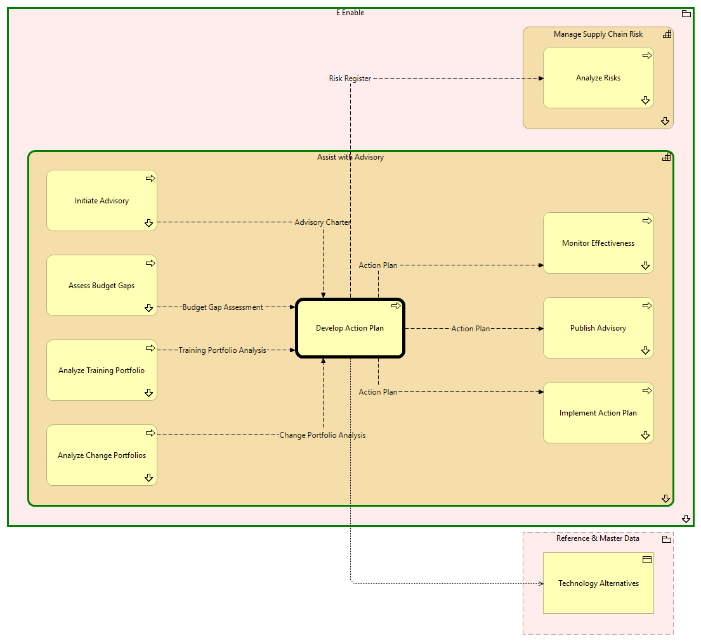

Develop Action Plan - Context
(
)

generated_by
build_archi_xml.py::gen_proc_node_context_view
generator_path
pedro/capabilities/build_archi_xml_assign/build_archi_xml_assign.py
run_at
2026-10-10T17:57:14
view_type
process_context
E Enable
Assist with Advisory
Analyze Training Portfolio
Analyze Training Portfolio - Context
Initiate Advisory
Initiate Advisory - Context
Assess Budget Gaps
Assess Budget Gaps - Context
Publish Advisory
Publish Advisory - Context
Develop Action Plan
Analyze Change Portfolios
Analyze Change Portfolios - Context
Implement Action Plan
Implement Action Plan - Context
Monitor Effectiveness
Monitor Effectiveness - Context
Assist with Advisory - Processes
Manage Supply Chain Risk
Analyze Risks
Analyze Risks - Context
Manage Supply Chain Risk - Processes
E Enable - Processes
Reference & Master Data
Technology Alternatives
Training Portfolio Analysis
Analyze Training Portfolio
Develop Action Plan
Advisory Charter
Initiate Advisory
Develop Action Plan
Budget Gap Assessment
Assess Budget Gaps
Develop Action Plan
Action Plan
Develop Action Plan
Implement Action Plan
Action Plan
Develop Action Plan
Monitor Effectiveness
Action Plan
Develop Action Plan
Publish Advisory
Risk Register
Develop Action Plan
Analyze Risks
Develop Action Plan
Technology Alternatives
Change Portfolio Analysis
Analyze Change Portfolios
Develop Action Plan